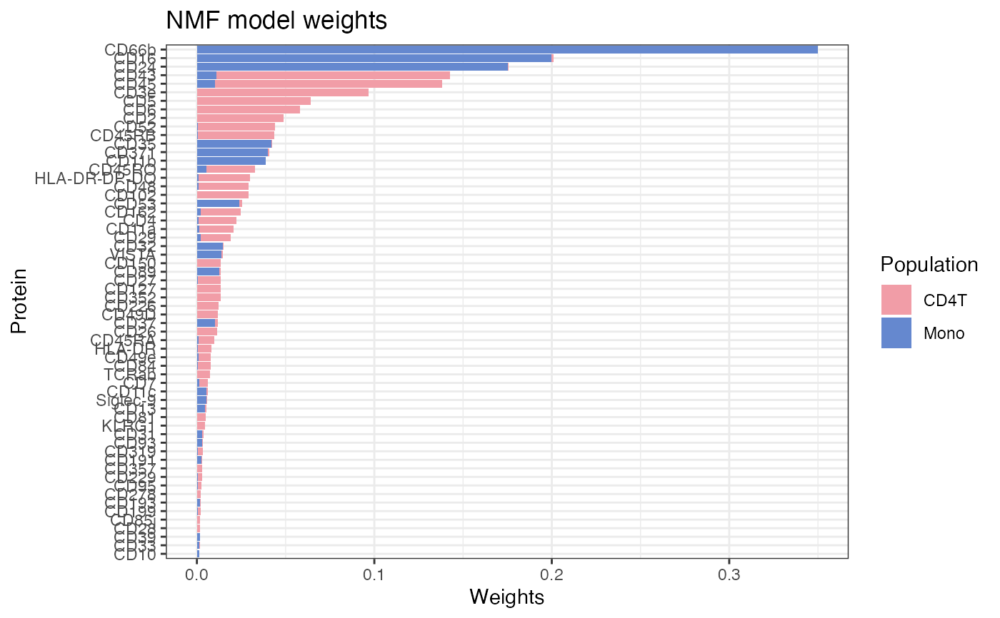

Derive protein weights for two cell populations
cc_protein_weights.RdThis function uses non-negative matrix factorization (NMF) to derive protein weights for two cell populations based on their protein abundance. It identifies proteins that are differentially expressed between the two populations and assigns weights that can be used for cell type inference.
Usage
cc_protein_weights(
object,
group_by,
population_1,
population_2,
masked_markers = NULL,
max_freq = 0.01,
min_diff = 0.5,
mode = c("cell_abundance", "k_neighborhood"),
max_components_per_population = 100L,
neighborhoods_per_component = 500L,
min_neighborhood_size = 10L,
k = 2L,
show_plot = TRUE,
verbose = TRUE
)Arguments
- object
A
Seuratobject with cell type labels in the metadata.- group_by
The name of the metadata column containing the cell type population labels.
- population_1, population_2
The names of the two cell populations.
- masked_markers
Optional character vector of proteins to exclude from the model.
- max_freq
Maximum frequency of a protein in either population to be included in the model. High abundant proteins such as HLA-ABC tend to get high protein weights across both cell populations, making them unsuitable for cell type inference. Default is 0.01 (1%).
- min_diff
Minimum difference in protein frequency between the two populations. This is calculated as (freq_pop1 - freq_pop2) / (freq_pop1 + freq_pop2).
- mode
Method to use for deriving protein weights. "k_neighborhood" uses the abundance of proteins in k-hop neighborhoods, while "cell_abundance" uses the overall abundance of proteins in each cell population. Default is "cell_abundance".
- max_components_per_population
Maximum number of components (cells or neighborhoods) to sample from each population for model training when
modeis "k_neighborhood". Default is 100.- neighborhoods_per_component
The number of neighborhoods to sample per cell type when
modeis "k_neighborhood".- min_neighborhood_size
Minimum number of nodes in a neighborhood for it to be included in the model when
modeis "k_neighborhood". Default is 10.- k
The neighborhood size to use when
modeis "k_neighborhood". This defines the number of hops to consider when creating the neighborhood profiles for each node. Default is 2.- show_plot
Whether to show a plot of the top protein weights. Default is TRUE.
- verbose
Whether to print progress messages during the weight derivation process.
Details
By default, a plot is generated showing the top protein weights for each population, which can help evaluate the specificity of the identified markers and cross-reference these with literature.
"k_neighborhood" mode details
In "k_neighborhood" mode, the NMF model is fit on count profiles from local graph
neighborhoods instead of whole-cell abundance profiles. Because segment_cell()
classifies nodes from neighborhood-level information, this mode can improve marker
specificity and downstream segmentation quality.
This mode is more computationally expensive and typically requires tuning of
neighborhood-related parameters (for example k, sampling depth, and minimum
neighborhood size).
Both "cell_abundance" and "k_neighborhood" modes assume that cell-type abundance differences are the dominant source of variation. If other effects are stronger (for example spatial structure), NMF may capture those effects instead of cell-type signal. This risk is often higher in "k_neighborhood" mode because local profiles are more sensitive to spatial patterns.
To reduce this risk, increase k (to smooth local variation) and/or provide
masked_markers to exclude known confounding markers from model fitting.
When using "k_neighborhood" mode, neighborhoods are split into a training set (80%) and a test set (20%). The NMF model is fit on the training set, and the learned weights are then applied to the test set to assess generalization. Low test-set classification performance suggests the model may not be capturing stable, cell type-specific signal.
masking markers
If strong spatial signatures interfere with cell-type separation, supply
masked_markers to exclude those proteins during model fitting. A common example
is platelet contamination, where markers such as CD41, CD36, CD62P, and CD9 are
often masked.
Examples
library(dplyr)
se <- ReadPNA_Seurat(minimal_pna_pxl_file())
#> ✔ Created a <Seurat> object with 5 cells and 158 targeted surface proteins
se$cell_type <- c("Mono", "pDC", "CD4T", "CD4T", "CD4T")
w <- cc_protein_weights(
se,
group_by = "cell_type",
population_1 = "Mono",
population_2 = "CD4T"
)
#> ! Population "Mono" has less than 20 cells, which may lead to unstable results.
#> ! Population "CD4T" has less than 20 cells, which may lead to unstable results.

head(w)
#> Mono CD4T
#> CD11b 3.863506e-02 0.0002470799
#> CD11c 5.531433e-03 0.0004586875
#> TCRab 1.575291e-04 0.0070295612
#> HLA-DR 6.444657e-04 0.0076158502
#> CD45 1.030968e-02 0.1277495896
#> CD14 9.006046e-07 0.0007086174